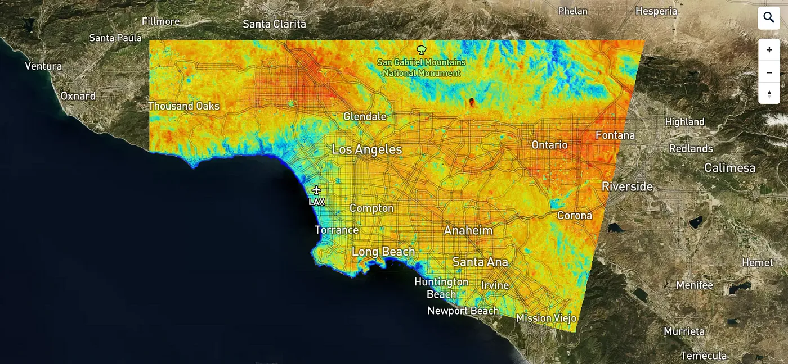
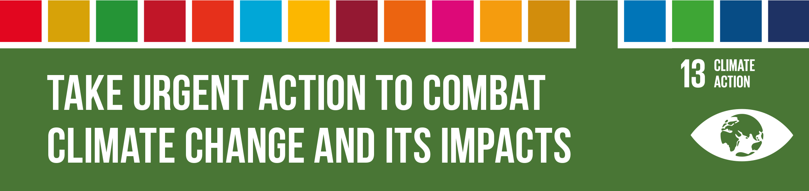
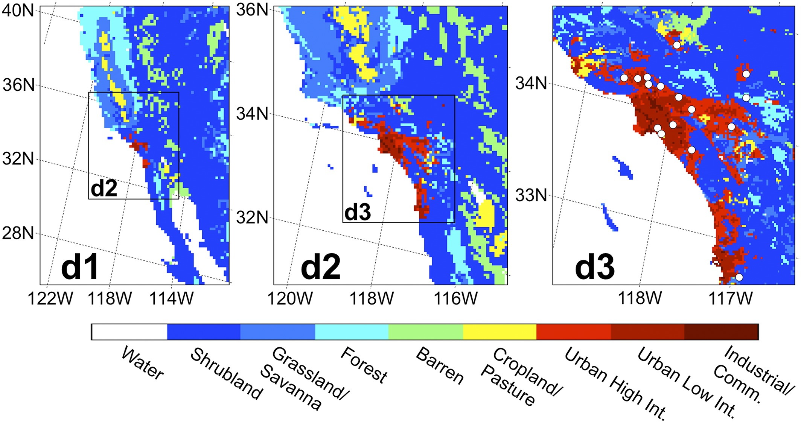

4 Week 4 Policy
4.1 Summary
I chose Los Angeles, USA, as this week’s city case study. As the largest city in California, Los Angeles has a vast population. Despite its booming economy, it faces severe climate challenges. City of Los Angeles (2021) outlets have expressed concern about the climate in Los Angeles, noting that over the next few decades, the average temperature in Los Angeles is expected to rise by 5 degrees Fahrenheit, with extreme heat causing significant damage. Los Angeles is experiencing a serious Urban Heat Island (UHI) effect, a microclimate phenomenon in which urban areas are significantly warmer than rural ones.
The American Council for an Energy-Efficient Economy (ACEEE) recorded “Los Angeles Heat Island Mitigation Policies and Programs” (n.d.), which indicates that Los Angeles has also approved many programs and policies to mitigate the UHI effect. The Cool Streets program incorporates many strategies, including shade structures and cool pavements. In October 2020, the City Council approved a policy requiring all new roofs to be cool roofs. The city’s Sustainable City Plan has set a goal to reduce the temperature difference between the city and rural areas by 1.7 degrees Fahrenheit by 2025.

Center for Resilient Cities and Landscapes (2020) has proposed a Heat Vulnerability Assessment. This assessment aims to achieve three main targets:
Converting heat-absorbing surfaces to cool surfaces.
Reducing the number of high-temperature emergency visits by residents.
Increasing urban tree canopy coverage.
These various policies, strategies, and plans aim to mitigate the UHI effect in Los Angeles, aligning with Sustainable Development Goal 13 (SDG 13) from United Nations (2015) : ‘Take urgent action to combat climate change and its impacts’.

4.2 Applications
This section will introduce various studies on using remote sensing technology to mitigate the Urban Heat Island (UHI) effect in Los Angeles. Many examples of using remote sensing technology to tackle the UHI effect exist. These efforts mainly aim to observe and detect urban heat vulnerability and then utilize vulnerability maps in combination with policies to construct and improve specific urban areas. For example, Ko et al. (2022) deployed cooling pavement devices across a large spatial scale.
Remote sensing data have also been used to examine further the effects of different mitigation solutions, such as Maruya (2021) studied the impact of albedo and cool pavement coatings on street surface temperatures using remote sensing infrared temperature data.
Moreover, some studies use remote sensing data to investigate the underlying factors contributing to the UHI effect and how these data can more effectively represent urban observations. Vahmani and Hogue (2014) combined Landsat and MODIS data to generate parameters such as Green Vegetation Fraction (GVF), albedo, and Impervious Surface Area (ISA). It was found that GVF enhanced the capability to observe urban vegetation areas. Vahmani and Ban-Weiss (2016) identified that the distance from the ocean is a significant factor in the variation of urban temperatures in Los Angeles.

4.3 Reflection
This week’s study focused specifically on the Urban Heat Island (UHI) effect in Los Angeles. I learned how researchers and policymakers use remote sensing technology to mitigate the UHI effect, aligning with SDG 13: Climate Action.
Initially, my understanding of UHI was limited, leading me to subconsciously believe that mitigation methods solely involved adding greenery or reducing carbon emissions. However, this week’s readings revealed that many studies concentrate on urban surface albedo. I discovered the importance of converting heat-absorbing surfaces into cool surfaces, such as through the application of cool pavement coatings.
Throughout the week, I engaged the readings in numerous studies that applied remote sensing. I noticed that different studies might emphasize different aspects. I have summarised these into three main points:
the designation of scheme areas (i.e., identifying the areas most severely affected by the UHI effect)
monitoring the effects of schemes (assessing whether the implemented schemes are effectively mitigating the effect)
analyzing the factors that contribute to the UHI effect.